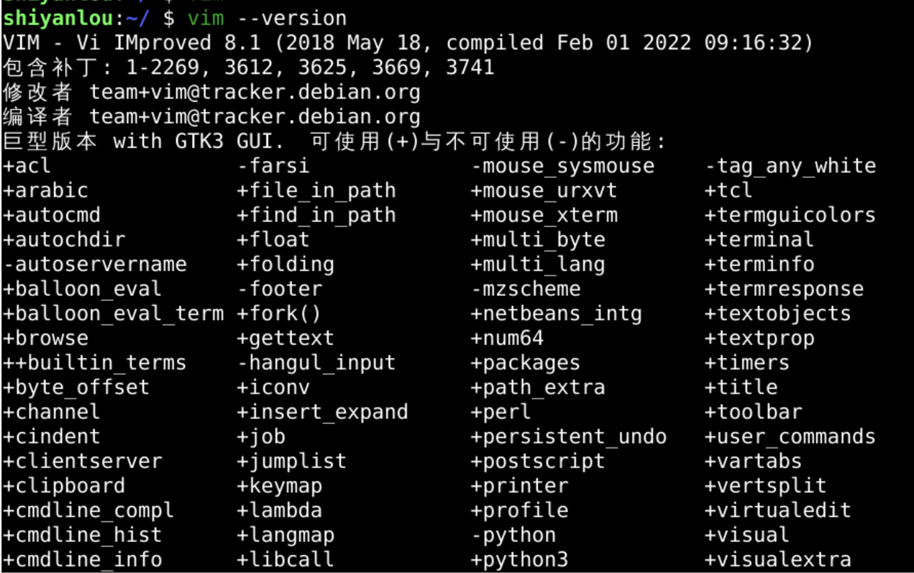
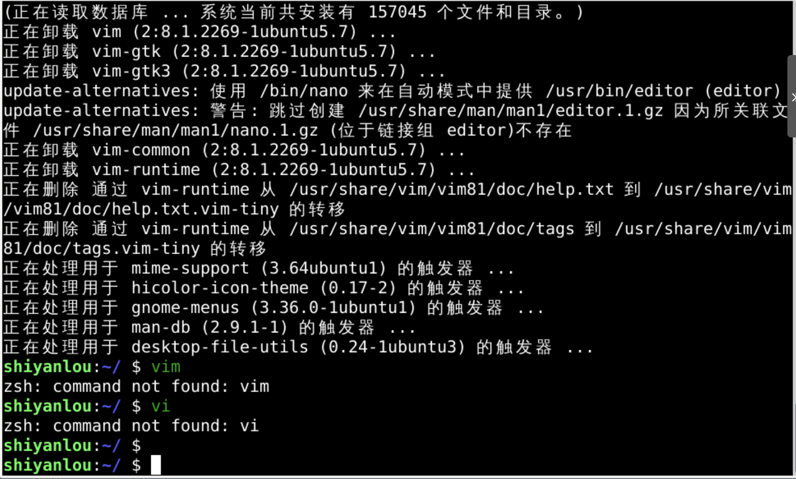
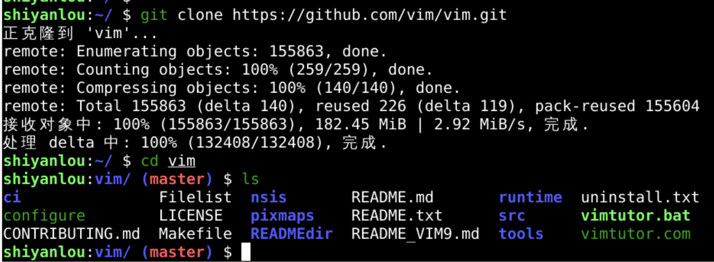
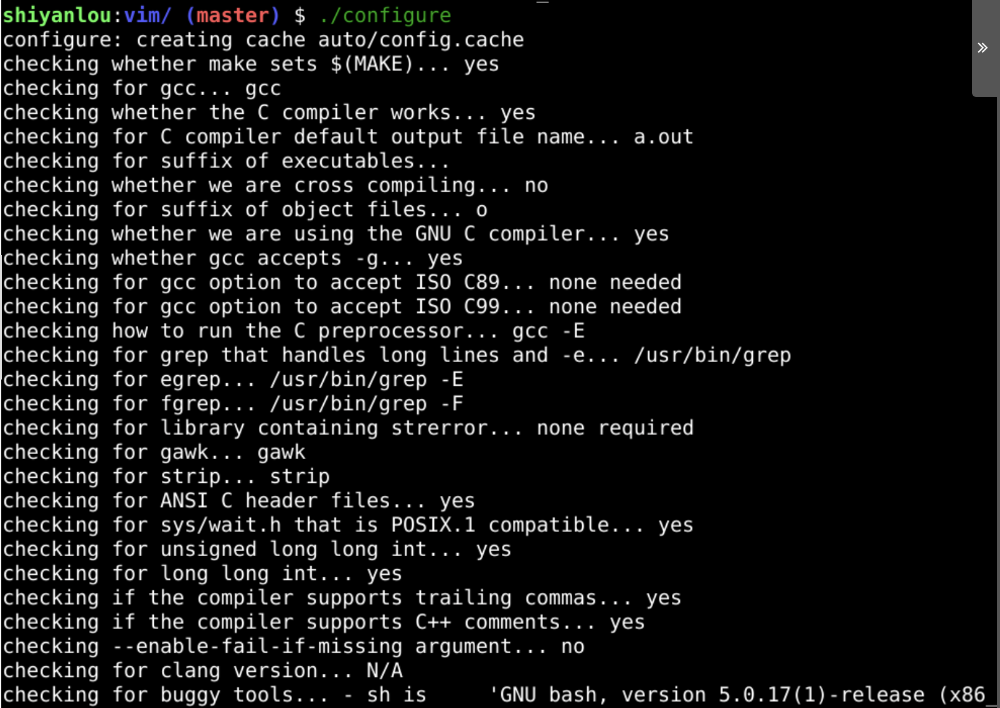
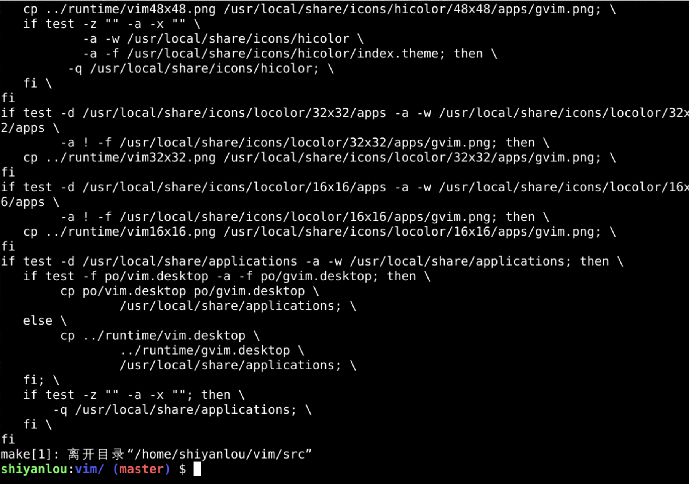
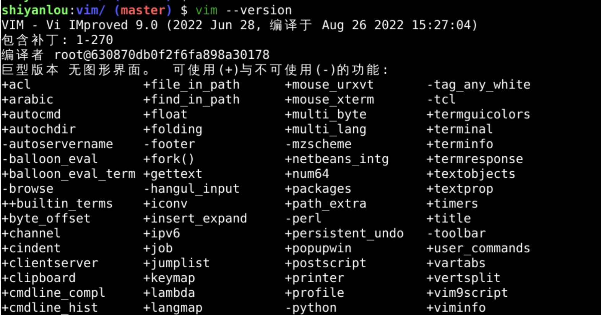
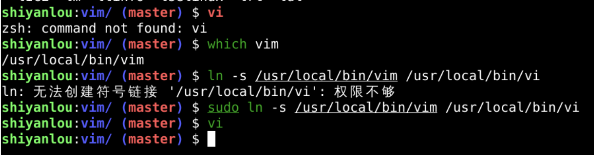
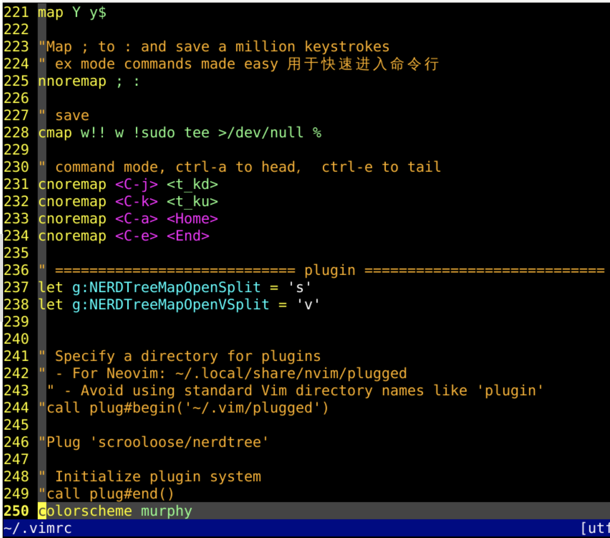
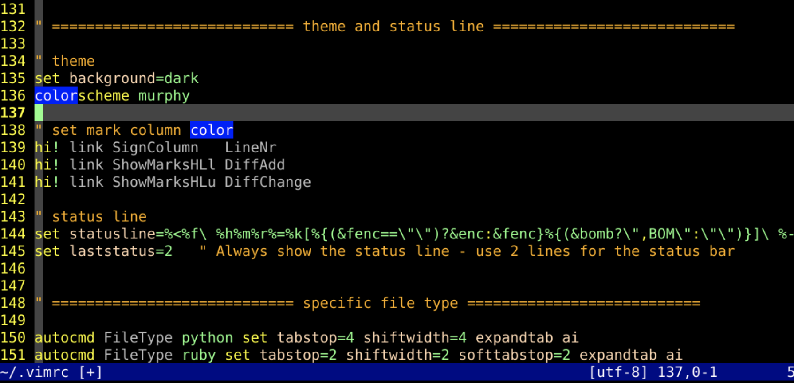

hi def link javaComment Commenthi Comment ctermfg=yellow
sudo apt remove vim vim-runtime vim-tiny vim-common vim-scripts vim-doc

git clone https://github.com/vim/vim.git

cd vim
./configure --with-features=huge --enable-pythoninterp=yes --enable-python3interp=yes

sudo make install




